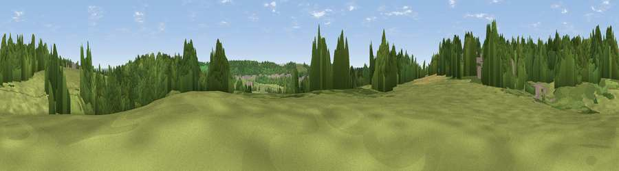

Viewpoint near Weston in Gordano
#37651 in England · top 77% of its area beats it · near Weston in GordanoWhere it is
The exact computed spot (ST 44925 75075). Click the marker for map links.
The view, rendered

A 360° render of this exact spot computed from the terrain model, tree cover and land cover — summer colours, afternoon light, calibrated against photographs of famous viewpoints. Real trees, hedges and buildings will differ in detail.
The panorama
Grey silhouette: terrain skyline in each direction (720 bearings, Earth curvature and refraction included). Dashed green: skyline with trees (+15 m) and buildings (+8 m) as obstacles. Blue strip: how far the ground is visible on each bearing.
Where the view opens
Wedge length = distance to the farthest visible ground on that bearing (vegetation-aware). Rings at 10, 25 and 50 km.
What fills the view
50% woodland · 37% grassland · 11% built-up · 2% cropland
Angular shares of the visible panorama (visual magnitude), not map area. Landscape diversity 0.45 (0–1 Shannon).
Key numbers
More beautiful places nearby
The staircase of upgrades: each row has a higher view potential than everything closer. Driving times are estimates from straight-line distance, calibrated against real road routing — check an actual route before setting out.
| Place | Direction | Drive | Score |
|---|---|---|---|
| Viewpoint near Weston in Gordano | NNW · 1 km | ~2 min | 46.8 |
| Viewpoint near Weston in Gordano | W · 1 km | ~2 min | 57.5 |
| Viewpoint near Weston in Gordano | WSW · 1 km | ~4 min | 69.7 |
| Viewpoint near Tickenham | S · 3 km | ~6 min | 72.1 |
| Dial Hill | SW · 5 km | ~11 min | 74.9 |
| Beacon Batch | SSE · 18 km | ~31 min | 79.4 |
| Bleadon Hill [Loxton Hill] | SSW · 20 km | ~34 min | 79.6 |
| Viewpoint near Stinchcombe | NE · 37 km | ~55 min | 80.5 |
51.47194, -2.79433 · source: screening · position refined by local search. Computed location — check access rights before visiting.